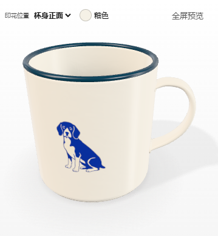
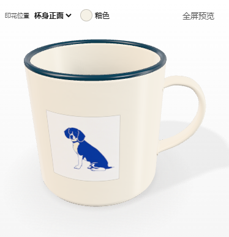

只试单色露白
沿用上一轮的原句和照片，用原稿的三个局部作画法参考。以下按犬纹主体等高展示，点图可看未经修改的生成文件。


上杯看小图




上一轮的蓝色试样


本轮的取舍
可继续试的是成片的单色、少量底白和原作者的姿态。文字稿仍有分趾，照片稿的眼鼻缩小后不够传神。原稿是目前唯一获创作者认可的样本，这两张仅供比较。
文字和照片各调用百炼一次。图像参考取自项目生成的蓝色原稿局部；照片沿用 USDA / Ken Hammond 公有领域素材。两张结果均以本机测试回放进入 H5，同一杯型下试贴、保存为私有作品、刷新后读取档案。本轮是独立试样，尚未设置为工作台默认风格。查看送入模型的墨样 · 本次输入记录